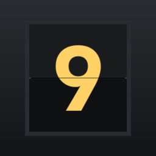

스도쿠 여행 : Gate 9 개인정보처리방침
Madang Works(이하 "개발자")는 안드로이드 게임 「스도쿠 여행 : Gate 9」(이하 "앱")를 제공하면서 이용자의 정보를 어떻게 다루는지 아래와 같이 알립니다.
- 회원가입과 로그인이 없습니다. 개발자는 이름·이메일·전화번호 같은 개인정보를 받지 않습니다.
- 진행 중인 판, 완료 기록, 여권 스탬프, 설정은 이 기기 안에만 저장됩니다. 앱은 개발자의 서버와 통신하지 않습니다.
- 광고를 보여주기 위해 Google AdMob 이 광고 ID 같은 기기 정보를 수집합니다(3항). 유럽경제지역(EEA)·영국·스위스에서는 먼저 동의를 묻습니다.
- [TOGETHER](같이 탑승)는 같은 Wi-Fi의 기기끼리 직접 연결하며, 개인정보는 주고받지 않습니다(5항).
1. 기기에 저장하는 정보
| 항목 | 내용 | 목적 |
|---|---|---|
| 진행 중인 판 | 채운 숫자와 메모, 경과 시간, 실수·힌트 횟수(같이 탑승이면 칸마다 넣은 자리 번호) | 앱을 닫았다 열어도 이어서 풉니다 |
| 완료 기록·여권 | 푼 판의 시간·실수·힌트 횟수와 날짜, 다녀온 목적지와 횟수, 노선별 통계, 오늘의 출발편 연속 기록, 같이 탑승으로 함께 푼 판 수와 함께한 자리 번호(P2 등) | 여권(스탬프·통계)을 보여 주고 안 푼 판을 고릅니다 |
| 설정 | 효과음 크기, ASMR 모드, 진동, 정답 기준 실수 체크, 경과 시간 표시, 기울임 효과 | 고른 설정을 다음에도 씁니다 |
| 보딩패스 이미지 | 마지막으로 완성한 판의 보딩패스 그림(목적지·시간·날짜) | 이용자가 공유를 누를 때 보냅니다(7항) |
이 정보는 개발자에게 가지 않으며 개발자는 볼 수 없습니다(같이 탑승 중에는 진행 중인 판이 함께 탄 기기로만 전해집니다 — 5항). 앱을 삭제하거나 [설정 › 애플리케이션 › 스도쿠 여행 : Gate 9 › 저장공간 › 데이터 삭제]를 하면 바로 지워집니다.
기울임 효과를 켜 두면 화면을 살짝 움직이기 위해 기기의 가속도 센서 값을 읽습니다. 이 값은 저장하거나 기기 밖으로 보내지 않습니다.
2. 개발자가 직접 수집하는 정보
없습니다. 개발자는 이용자를 식별할 수 있는 정보를 수집·보관·제공하지 않습니다. AdMob 에서는 이용자를 알아볼 수 없는 집계 통계(광고 노출 수, 수익 등)만 봅니다.
3. 광고 — Google AdMob
앱은 판을 푸는 동안 화면 아래 광고판 자리에 배너 광고를, 결과 화면에서 몇 판마다 전면 광고(오늘의 출발편을 마쳤을 때는 없음)를, 이용자가 고를 때만 보상형 광고(무료 힌트를 다 쓴 뒤의 힌트, 결항 뒤 재탑승)를 보여 줍니다. 이를 위해 Google 의 모바일 광고 SDK(AdMob)를 씁니다. 같이 탑승 중에는 배너가 나오지 않고, 결과 화면의 전면 광고와 재탑승 보상형 광고는 게이트를 연 기기에서만 나옵니다. 이 SDK 는 다음 정보를 수집해 Google 로 보냅니다.
- 기기 식별자 — Android 광고 ID, 앱 세트 ID
- IP 주소 — 대략적인 위치를 추정하는 데 쓰일 수 있습니다
- 앱 이용 정보 — 앱 실행, 탭, 광고 영상 시청 등
- 진단 정보 — 앱과 SDK 의 성능(실행 시간, 멈춤 비율, 에너지 사용 등)
목적은 광고 게재와 측정, 분석, 부정 클릭·사기 방지이며, 전송 중에는 TLS 로 암호화됩니다. 이 정보의 처리는 Google 의 방침을 따릅니다 — Google 개인정보처리방침, Google 이 파트너 사이트·앱의 정보를 사용하는 방법.
광고 설정 바꾸기
유럽경제지역(EEA)·영국·스위스에서는 광고를 보여 주기 전에 Google 의 동의 메시지로 맞춤 광고 등에 대한 동의를 묻습니다. 동의하지 않아도 게임은 그대로 할 수 있으며, 이때는 개인 맞춤이 아닌 제한적인 광고가 나올 수 있습니다. 고른 것은 [SETTINGS › 광고 개인정보 설정]에서 언제든 바꾸거나 거둘 수 있습니다(동의가 필요한 지역에서만 보이는 항목입니다).
Android 설정의 [개인 정보 보호 › 광고](기기에 따라 [Google › 광고])에서 광고 ID 를 재설정하거나 삭제할 수 있습니다. 광고 ID 를 삭제하면 맞춤 광고에 광고 ID 가 쓰이지 않습니다. Google 내 광고 센터에서도 맞춤 광고를 관리할 수 있습니다.
4. 국외 이전
개발자는 이용자 정보를 다른 곳에 제공하지 않습니다. 다만 3항의 정보는 앱 이용 중 광고 SDK 를 통해 아래와 같이 국외로 전송됩니다.
| 이전받는 자 | Google LLC (미국) — 개인정보 문의: Google 개인정보 문의 |
|---|---|
| 이전 국가 | 미국 등 Google 이 데이터를 처리하는 국가 |
| 이전 항목 | 3항의 기기 식별자, IP 주소, 앱 이용 정보, 진단 정보 |
| 이전 시기·방법 | 광고를 요청·표시할 때 인터넷을 통해 (TLS 암호화) |
| 목적 | 광고 게재·측정, 분석, 부정 방지 |
| 보유 기간 | Google 의 보관 정책에 따름 |
국외 이전을 원하지 않으면 앱을 쓰지 않거나 위의 광고 설정에서 광고 ID 를 삭제할 수 있습니다. 인터넷에 연결되지 않아 광고가 나오지 않는 상태에서도 게임은 그대로 할 수 있습니다.
5. 같이 탑승 — 같은 Wi-Fi
로비의 [TOGETHER]를 쓰면 같은 Wi-Fi(로컬 네트워크)에 있는 기기 2~4대가 직접 연결해 한 판을 함께 풉니다. 인터넷 너머의 사람과는 연결하지 않고, 개발자의 서버를 거치지 않습니다. 게이트를 연 기기(호스트)가 입력의 순서를 정하고, 함께 탄 기기(게스트)는 같은 순서로 판을 맞춥니다.
- 게이트 알림 — 게이트를 열면 같은 Wi-Fi에 게이트 코드(숫자 네 자리), 노선, 인원, 연결할 포트를 알립니다. 게이트 코드로 찾을 때는 같은 Wi-Fi의 주소들에 찾는 신호를 보냅니다.
- 기기끼리 주고받는 것 — 고른 판, 칸에 넣은 숫자와 메모, 되돌리기, 보고 있는 칸, 실수·힌트 횟수, 경과 시간, 자리 번호(P1~P4), 앱을 잠시 나갔는지 여부
이름·계정·연락처 같은 개인정보는 보내지 않습니다 — 게이트에서는 P1~P4로만 보이고, 채팅은 없습니다. 연결에는 기기의 로컬 네트워크 주소(IP)가 쓰이며, 연결이 끝나면 버립니다. 함께 푼 판은 저마다의 기기에 기록(1항)으로 남습니다.
6. 앱 권한
앱은 위치·카메라·마이크·연락처·사진 같은 권한을 요청하지 않습니다. 광고를 받고 같이 탑승에서 기기끼리 연결하기 위한
인터넷 권한, 짧은 진동을 위한 진동 권한(VIBRATE, 설정에서 끌 수 있습니다), 광고 ID 권한(AD_ID),
광고 SDK 가 쓰는 시스템 권한(네트워크 상태 확인, 통신망 종류 같은 기본 전화 상태 READ_BASIC_PHONE_STATE —
전화번호나 통화 내용은 아닙니다 — 등), 그리고 같이 탑승에서 같은 Wi-Fi의 게이트 알림을 받기 위한 와이파이 멀티캐스트
권한(CHANGE_WIFI_MULTICAST_STATE)만 있으며, 모두 설치할 때 자동으로 허용되는 권한입니다.
7. 공유
판을 완성하면 기기 안에서 보딩패스 이미지가 만들어집니다. 이 이미지는 이용자가 [SHARE]를 눌러 직접 고른 앱으로만 전달되며, 개발자에게는 보내지지 않습니다.
8. 아동
앱은 13세 미만 아동을 대상으로 하지 않으며, 개발자는 아동의 개인정보를 알고서 수집하지 않습니다.
9. 이용자의 권리
개발자가 보관하는 개인정보가 없으므로 열람·정정·삭제를 요청할 대상이 없습니다. 기기에 저장된 정보는 1항의 방법으로 직접 지울 수 있고, 광고 정보는 3항의 설정과 Google 의 도구로 관리할 수 있습니다. 궁금한 점은 아래 연락처로 문의해 주세요.
10. 개인정보 보호책임자 · 문의
Madang Works — 이메일 pan889@naver.com
11. 변경
이 방침이 바뀌면 시행일과 함께 이 페이지에 알립니다. 앱이 수집하는 정보가 달라지는 변경은 시행 7일 전에 알립니다.
Sudoku Travel : Gate 9 Privacy Policy
This policy explains how Madang Works ("we") handles information in the Android game 스도쿠 여행 : Gate 9 (Sudoku Travel : Gate 9, "the app").
- There is no sign-up or login. We do not collect your name, email address, phone number or any other personal information.
- Your puzzle in progress, completion records, passport stamps and settings are stored only on your device. The app does not communicate with our servers.
- To show ads, Google AdMob collects device information such as the advertising ID (section 3). In the EEA, the UK and Switzerland, the app asks for your consent first.
- [TOGETHER] (board together) connects devices on the same Wi-Fi directly and exchanges no personal information (section 5).
1. Information stored on your device
| Item | Contents | Purpose |
|---|---|---|
| Puzzle in progress | Digits and notes you entered, elapsed time, mistake and hint counts (with TOGETHER, the seat number that filled each cell) | So you can continue after closing the app |
| Records and passport | Time, mistakes, hints and date of each solved puzzle, destinations visited and how often, per-route statistics, daily-departure streak, how many puzzles you solved with TOGETHER and the seat numbers you solved them with (such as P2) | Shown in the passport (stamps, statistics) and used to pick puzzles you have not solved |
| Settings | Sound volume, ASMR mode, vibration, mistake check, elapsed-time display, tilt effect | So your choices are kept next time |
| Boarding pass image | The boarding pass picture of your last solved puzzle (destination, time, date) | Sent only when you tap Share (section 7) |
This information never reaches us and we cannot see it (during TOGETHER, the puzzle in progress is sent only to the devices boarded with you — section 5). Uninstalling the app, or [Settings › Apps › 스도쿠 여행 : Gate 9 › Storage › Clear data], deletes it immediately.
When the tilt effect is on, the app reads the device's accelerometer to move the screen slightly. These readings are neither stored nor sent off the device.
2. Information we collect
None. We do not collect, store or share information that identifies you. In AdMob we only see aggregated statistics (such as impressions and revenue) that cannot identify you.
3. Advertising — Google AdMob
The app shows a banner ad in the ad panel at the bottom of the screen while you solve a puzzle, an interstitial ad on the result screen every few puzzles (never after the daily departure), and a rewarded ad only when you choose one (a hint after the free hints are used up, or reboarding after being grounded). During TOGETHER there is no banner, and the result-screen interstitial and the reboarding rewarded ad appear only on the device that opened the gate. The app uses Google's Mobile Ads SDK (AdMob) for this, which collects the following and sends it to Google:
- Device identifiers — Android advertising ID, app set ID
- IP address — may be used to estimate your general location
- App interactions — app launches, taps, ad video views
- Diagnostics — performance of the app and the SDK (launch time, hang rate, energy use)
It is used for serving and measuring ads, analytics and fraud prevention, and is encrypted in transit with TLS. Google processes this data under its own policies — Google Privacy Policy, How Google uses information from sites or apps that use its services.
Changing your ad settings
In the European Economic Area (EEA), the UK and Switzerland, the app asks for your consent through Google's consent message before showing ads, for example for personalized ads. The game remains fully playable if you do not consent; you may then see limited, non-personalized ads. You can change or withdraw your choice at any time with [SETTINGS › 광고 개인정보 설정] (ad privacy settings), which appears only in regions where consent is required.
In Android Settings, [Privacy › Ads] (or [Google › Ads] on some devices) lets you reset or delete your advertising ID. Once deleted, it is not used for personalized ads. You can also manage personalized ads in My Ad Center.
4. International transfer
We do not share your information with anyone. The information in section 3 is, however, transferred abroad through the ads SDK while you use the app:
| Recipient | Google LLC (USA) — privacy contact: Google privacy form |
|---|---|
| Countries | The United States and other countries where Google processes data |
| Items | Device identifiers, IP address, app interactions and diagnostics (section 3) |
| When and how | Over the internet when ads are requested or shown (TLS encrypted) |
| Purpose | Serving and measuring ads, analytics, fraud prevention |
| Retention | According to Google's retention policies |
If you do not want this transfer, you can stop using the app or delete your advertising ID as described above. The game remains fully playable offline, when no ads are shown.
5. Board together — same Wi-Fi
With [TOGETHER] in the lobby, 2 to 4 devices on the same Wi-Fi (local network) connect directly to solve one puzzle together. The app does not connect to people beyond your local network and does not go through our servers. The device that opens the gate (the host) decides the order of the moves, and the boarded devices (guests) apply them in the same order.
- Gate announcement — when you open a gate, the app announces on the same Wi-Fi the gate code (four digits), the route, the number of players and the port to connect to. When you search by gate code, the app sends a search signal to the addresses on the same Wi-Fi.
- Exchanged between devices — the chosen puzzle, digits and notes entered, undos, the cell each player is looking at, mistake and hint counts, elapsed time, seat numbers (P1 to P4) and whether a player has left the app for a moment
No personal information such as names, accounts or contacts is sent — at the gate, players appear only as P1 to P4, and there is no chat. The connection uses each device's local network address (IP), which is discarded when the connection ends. Puzzles solved together are kept as records (section 1) on each player's own device.
6. App permissions
The app does not request location, camera, microphone, contacts, photos or similar permissions. It only has
internet access to receive ads and to connect devices in TOGETHER, the vibrate permission (VIBRATE) for
short haptic feedback, which you can turn off in the settings, the advertising ID permission (AD_ID),
system permissions used by the ads SDK (network state, and basic phone state such as the network type,
READ_BASIC_PHONE_STATE — not your phone number or calls), and the Wi-Fi multicast permission
(CHANGE_WIFI_MULTICAST_STATE) to receive gate announcements on the same Wi-Fi in TOGETHER, all of which are
granted automatically at install.
7. Sharing
When you solve a puzzle, a boarding pass image is created on your device. It is sent only to the app you choose after tapping [SHARE], and never to us.
8. Children
The app is not directed to children under 13, and we do not knowingly collect personal information from children.
9. Your rights
Because we hold no personal information about you, there is nothing for us to access, correct or delete. You can delete the on-device information as described in section 1 and manage ad data with the settings in section 3 and Google's tools. Please contact us with any questions.
10. Contact
Madang Works — email pan889@naver.com
11. Changes
If this policy changes, we will post the new version on this page with its effective date. Changes to the information the app collects will be announced 7 days before they take effect.